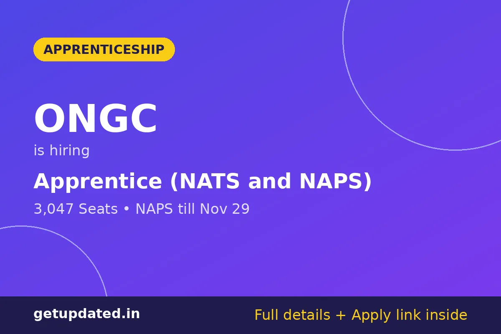

Google is hiring Associate Product Managers (University Graduate, 2027 Start) in Bengaluru, Karnataka. The role is aimed at students and recent graduates from product management, computer science, engineering, data science, mathematics, statistics or related technical fields, with cohort start dates between April and August 2027.
The official posting says applications opened on October 30, 2026, and you must complete your application before the end of day on November 24, 2026. Today is November 23, so this is effectively a last-day opportunity for anyone who is eligible and has not yet applied.
Below you will find the eligibility, the documents to upload, how the process works, and a practical plan to make a strong application quickly.
Apply early: deadline is November 24, 2026
The Google careers page states that the application must be completed before end of day on November 24, 2026. Do not wait for the last hour: keep your resume and transcript ready and submit today.
Table of Contents
- Quick Highlights
- About Google and the Product Management Team
- Role Overview: What an Associate Product Manager Does
- Eligibility Criteria
- Preferred Qualifications
- Important Dates
- Salary and Benefits
- Selection Process
- How to Apply
- Preparation Plan for Freshers
- Common Mistakes to Avoid
- Official Links and Final Checklist
- Final Takeaway
- Also Read
- FAQs
Quick Highlights
| Particular | Details |
|---|---|
| Company | |
| Role | Associate Product Manager, University Graduate, 2027 Start |
| Location | Bengaluru, Karnataka, India |
| Experience level | Early (completing work as directed and collaborating with teammates) |
| Start window | Cohort starts between April and August 2027 |
| Applications opened | October 30, 2026 |
| Last date | Before end of day, November 24, 2026 |
| Salary | Not disclosed on the official page |
| How to apply | Through the official Google Careers link in the Official Links section below |
About Google and the Product Management Team
Google builds products that aim to organise the world's information and make it universally accessible. According to the job description, the company "puts users first" and needs Product Managers who keep adapting and are excited to work on products that affect millions of people every day.
Product Management at Google works closely with engineers, designers, marketers and other teams to design and develop technologies. PMs guide products through the execution cycle, with a focus on analysing, positioning, packaging, promoting and tailoring solutions to users.
Role Overview: What an Associate Product Manager Does
In this role you work cross-functionally to guide products from conception to launch, connecting the technical and business worlds. You are expected to break down complex problems into steps that drive product development.
The posting says you could work on new technologies, platforms, consumer-facing products and/or enterprise systems. The end goal is to match you with the team that best fits your interests, experience and where you can have the most impact, so the team is not fixed at the time of applying.
Listed responsibilities include:
- Understanding markets and user requirements in depth.
- Launching products and features, testing their performance and iterating quickly.
- Working collaboratively with Engineering, Marketing, Legal and other teams (the full list is on the official page).

Eligibility Criteria
The official minimum qualifications are:
- Currently enrolled in, or graduated from, a degree programme in Product Management, Computer Science, Engineering, Data Science, Mathematics, Statistics or a related technical field, or equivalent practical experience.
- Internship or Teaching Assistant experience in product management, software development or a similar technical field.
- Experience leading entrepreneurial efforts or outreach within organisations while building cross-functional relationships.
- Experience preparing and delivering technical presentations to an audience through internships, coursework or extracurriculars.
Specific graduation years or percentage cut-offs are not stated in the text we verified, so read the official posting before you apply.
Preferred Qualifications
These are not mandatory but help your profile stand out:
- Experience with methodologies aimed at driving product development and delivery.
- Experience applying AI/ML concepts to build products or features through internships, capstone projects or other academic work.
- Technical experience with programming languages, data analysis, business case/modelling, pricing or design.
- Ability to start full-time in the primary cohort onboarding cycle between April and August 2027.
- Fluent English communication to support cross-functional business relationships in the region.
- Excellent problem-solving, organisational, investigative and critical thinking skills.
Turn projects into PM evidence
A college project, hackathon or capstone can count if you describe it like a PM: the user problem, the decision you made, how you measured success and what you changed afterwards.
Important Dates
| Event | Date |
|---|---|
| Applications open | October 30, 2026 |
| Last date to complete application | Before end of day, November 24, 2026 |
| Target cohort start | April to August 2027 |
| Applicant updates | All applicants notified by the end of Spring 2027 |
Google also thanks applicants for their patience while the team reviews all applications, so do not expect a quick reply.
Salary and Benefits
The official posting does not disclose salary for this role. We are not quoting any figure here, because unverified numbers from third-party sites can mislead. Compensation details, if you are progressed, are typically discussed by the recruiter during the process.
Selection Process
The official page does not publish the detailed rounds. It only says that applications will be reviewed and that all applicants will be notified by the end of Spring 2027. For general guidance on Google's process, see the "How we hire" page linked in the Official Links section.
Because the details are not published, prepare broadly: product sense (designing and improving products), analytical thinking, technical understanding, and clear communication. Your resume and transcript are the first filter, so make them accurate and well presented.

How to Apply
- Open the official Google Careers posting using the link in the Official Links section below.
- Sign in with your Google account and click Apply.
- In the Resume section, attach an updated CV or resume. No cover letter is needed.
- In the Higher education section, fill in the fields and select "Now attending or Graduated" under "Degree status".
- Upload a current or recent unofficial or official transcript in English.
- Complete the remaining fields and submit before end of day on November 24, 2026.
Transcript must be in English
If your university issues marksheets in another format, compile a clear English transcript showing your courses and grades. A missing or wrong degree-status selection can hurt your application.
Preparation Plan for Freshers
If you are applying today, focus on the application first and on interview prep afterwards. Spend an hour on a one-page resume that shows internships, projects, leadership and presentations, with measurable outcomes wherever you can.
If you are shortlisted later, build these skills over the coming weeks: structured product thinking (user, problem, solution, trade-offs, metrics), basic data analysis and SQL, understanding of how software gets built, and AI/ML basics, since the preferred qualifications mention them. Practise explaining a technical idea to a non-technical listener in two minutes.
Common Mistakes to Avoid
- Submitting after the deadline or leaving the form half-filled.
- Forgetting to select "Now attending or Graduated" under degree status.
- Uploading a transcript that is not in English.
- Writing a resume full of duties instead of results.
- Ignoring the April to August 2027 start window if you cannot join in that period.
Official Links and Final Checklist
Checklist: updated resume ready, English transcript ready, degree status selected correctly, application submitted before end of day on November 24, 2026.
Final Takeaway
This is a rare Bengaluru entry-level PM opportunity at Google, and the window closes on November 24, 2026.
If you match the technical background and have internship, project or presentation experience, apply through the official link in the Official Links section above without delay. Even if the process takes months, a complete application today keeps you in the running for the 2027 cohort.
Also Read

Rubrik Hiring Software Engineer (CPD) Winter Intern 2027 in Bangalore
Read now →
ONGC Apprentice Recruitment 2026: 3,047 Posts — Eligibility, Stipend, NATS/NAPS Dates & How to Apply
Read now →
Synopsys Hiring Formal Verification Intern 2026: 12-Month Internship in Bengaluru for ECE/EEE Students
Read now →
RapidClaims Hiring Freshers 2026: SDE Intern (6 Months, On-site Bengaluru)
Read now →Browse all latest jobs & updates →
FAQs
1. What is the last date to apply for Google APM 2027?
The application must be completed before end of day on November 24, 2026.
2. Where is the job located?
The role is based in Bengaluru, Karnataka, India.
3. Who can apply?
Students currently enrolled in or graduated from Product Management, Computer Science, Engineering, Data Science, Mathematics, Statistics or a related technical field, or with equivalent practical experience.
4. When will the candidates join?
Cohort starts are targeted between April and August 2027.
5. Is a cover letter required?
No. You only need to attach an updated resume and upload a current or recent transcript in English.
6. What should I select under Degree status?
Select 'Now attending or Graduated' in the Higher education section.
7. What is the salary?
The official posting does not disclose the salary.
8. When will applicants hear back?
Google says all applicants will be notified by the end of Spring 2027.